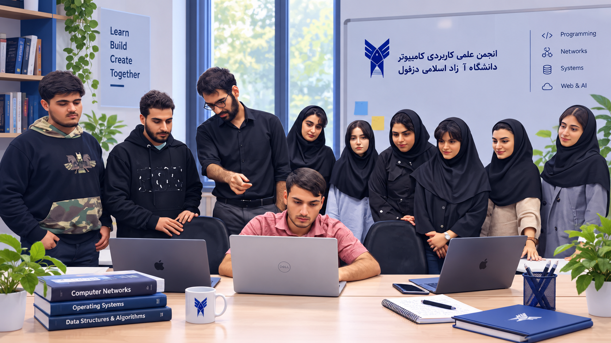
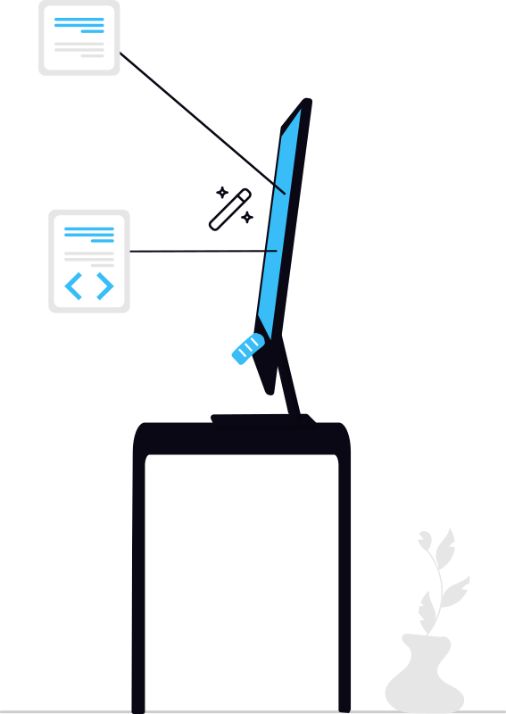
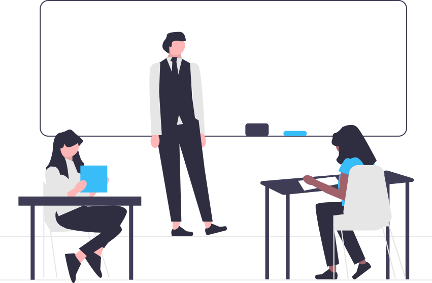
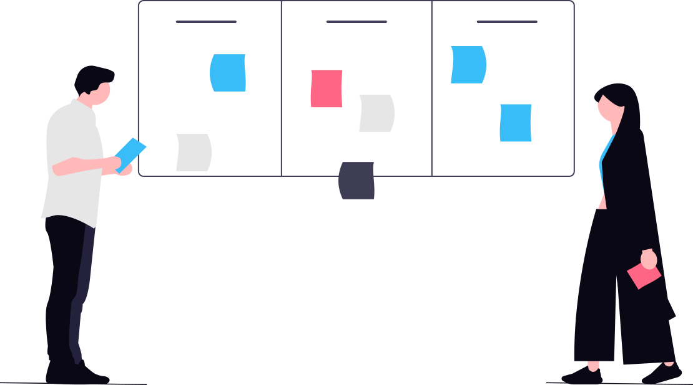
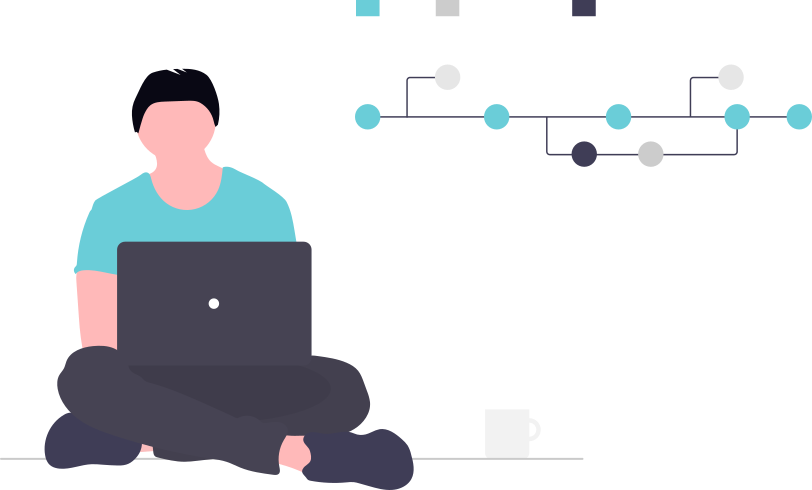
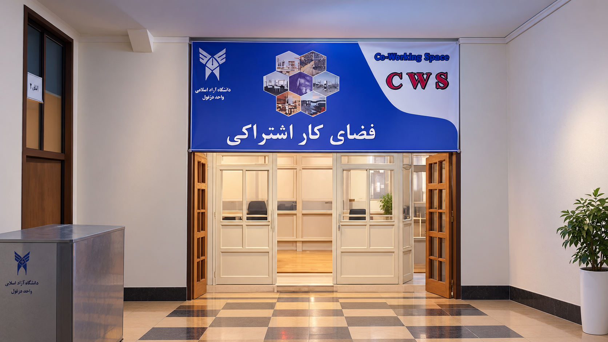
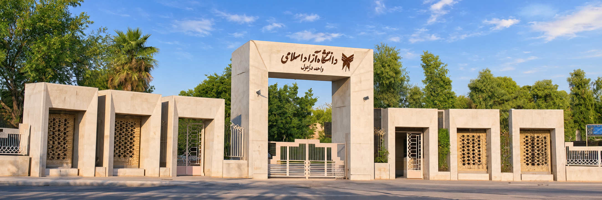
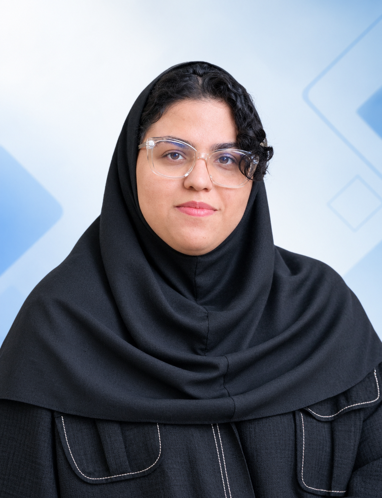
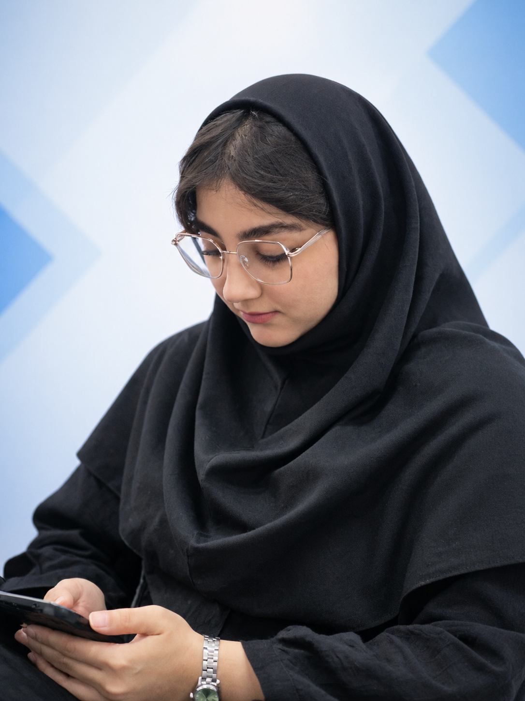

تاریخچه انجمن
انجمن به عنوان فضایی برای فعالیتهای علمی و مهارتی دانشجویان شکل گرفته تا زمینه تعامل، یادگیری و مشارکت بیشتر در حوزه کامپیوتر را فراهم کند.
انجمن علمی کاربردی کامپیوتر با هدف ایجاد بستری برای رشد علمی و مهارتی دانشجویان و تقویت ارتباط میان دانشجویان، اساتید و علاقهمندان حوزه کامپیوتر فعالیت میکند.


برگزاری جلسات مشاوره شغلی با متخصصان صنعت و ایجاد فرصتهای کارآموزی.

برگزاری همایشها و سمینارهای علمی با حضور اساتید و معرفی جدیدترین تکنولوژیها.

اجرای پروژههای هوش مصنوعی، پردازش دادههای کلان، IoT و همکاری با شرکتها.

دوره اول این مسابقات در سال 1403 برگزار شد و به صورت دورهای ادامه دارد.
برگزاری دورههای برنامهنویسی، هوش مصنوعی، یادگیری ماشین، امنیت و بلاکچین.
فضایی برای یادگیری، تجربه، همکاری و شکلگیری ایدههای دانشجویی.
انجمن علمی کاربردی کامپیوتر با هدف ایجاد بستری مناسب برای رشد علمی و مهارتی دانشجویان فعالیت میکند. برگزاری دورهها، کارگاهها، نشستهای تخصصی، پروژههای دانشجویی و ایجاد ارتباط میان دانشجویان و اساتید از مهمترین زمینههای فعالیت انجمن است.
تلاش انجمن بر این است که در کنار فضای آموزشی دانشگاه، فرصتهایی برای تجربه عملی، تعامل علمی و ارائه ایدهها و دستاوردهای دانشجویان فراهم شود.
هدف، نزدیکتر کردن مسیر یادگیری دانشگاهی به مهارت و فعالیت عملی است.
انجمن به عنوان فضایی برای فعالیتهای علمی و مهارتی دانشجویان شکل گرفته تا زمینه تعامل، یادگیری و مشارکت بیشتر در حوزه کامپیوتر را فراهم کند.
تقویت مهارتهای کاربردی، حمایت از ایدهها و پروژههای دانشجویی، برگزاری برنامههای آموزشی و ایجاد ارتباط مؤثر میان دانشجویان و اساتید.
دورهها و کارگاههای آموزشی، نشستهای تخصصی، رویدادها، پروژههای دانشجویی و فعالیتهای علمی از محورهای اصلی برنامههای انجمن هستند.

محل فضای کار اشتراکی دانشگاه با هدف ایجاد محیطی پویا برای تعامل، همفکری و فعالیتهای گروهی دانشجویان فراهم شده است تا انجمنهای علمی بتوانند جلسات، برنامهریزیها و فعالیتهای خود را در فضای مناسب و مجهز برگزار کنند.

انجمن علمی کاربردی کامپیوتر در فضای دانشگاه و در ارتباط با جامعه دانشجویی فعالیت میکند و تلاش دارد فرصتهای علمی و مهارتی متناسب با نیاز دانشجویان ایجاد کند.
اعضای تیم اجرایی انجمن علمی کاربردی کامپیوتر.


دسترسی سریع به سامانههای مورد نیاز دانشجویان در فعالیتهای آموزشی و دانشگاهی.